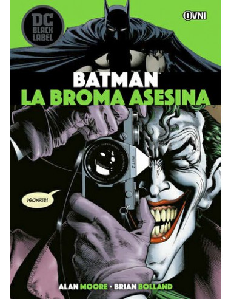
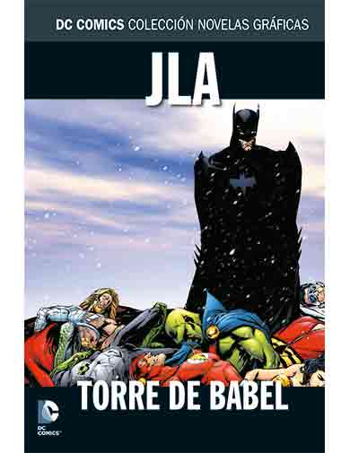
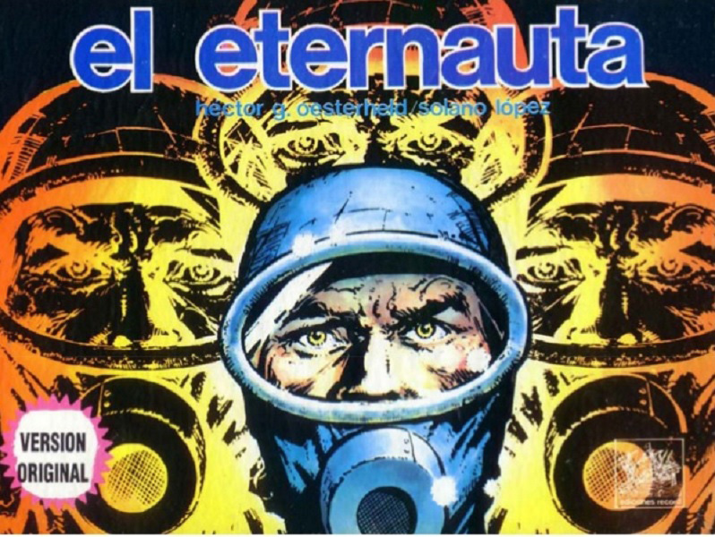

Recomendaciones
Batman: The Killing Joke
- Fecha de publicación original: marzo de 1988
- Autor: Alan Moore
- Artista: Brian Bolland
- Premios: Eisner Award for Best Writer
Batman: la broma asesina, conocida también en Hispanoamérica como Batman: la broma macabra y Batman: la broma mortal— es una novela gráfica de Batman publicada por la editorial DC Comics La historia examina el trasfondo del villano conocido como el Joker y muestra sus orígenes y primer encuentro con el Hombre Murciélago. La historia del cómic es famosa por su nudo argumental, en el cual el villano decide atacar al jefe de policía de Gotham James Gordon, a quien intenta volver loco, y a su hija Barbara, a quien dejaría paralítica luego de dispararle a quemarropa. La historia trata sobre temas como la locura, la maldad y el bien.4 Su escritor expone al héroe y al villano como dos personajes sumamente parecidos y alude a que ambos pasaron por momentos muy difíciles, que los llevaron a convertirse en lo que son. También expone la posibilidad de que Batman esté tan enfermo mentalmente como el Joker, con la diferencia fundamental de que El Caballero Oscuro demuestra y canaliza su locura de forma diferente.
JLA: Torre de Babel
- Fecha de publicación original: Julio de 2000 - Octubre de 2000
- Autor: Mark Waid
- Artista: Howard Porter; Steve Scott
Torre de Babel trata la traición percibida de Batman hacia la comunidad de superhéroes por mantener registros sobre las fortalezas y debilidades de sus aliados en la JLA, incluyendo planes para neutralizar a sus aliados en una lucha. Sus archivos son robados por el ecoterrorista Ra's al Ghul, que los utiliza para derrotar a la Liga a través de un ataque coordinado para evitar que interfieran con su último proyecto, la reducción de la población mundial hasta que sea mantenible por él.es una historia de cómic del año 2000 que se publicó en la serie mensual de DC Comics JLA #43-46.
El eternauta
- Fecha de publicación original: Julio de 2000 - Octubre de 2000
- Autor: Héctor Germán Oesterheld
- Artista: Francisco Solano López
El Eternauta no cuenta las aventuras del El Eternauta- ese viajero del tiempo y el espacio que lo ha visto todo y está cansadísimo como sólo puede estarlo el testigo absoluto de la memoria de la humanidad- sino que cuenta algo anterior, previo, la aventura de Juan Salvo (alevoso nombre de sobreviviente ...) y todo lo que a éste le pasó hasta convertirse en Eternauta
